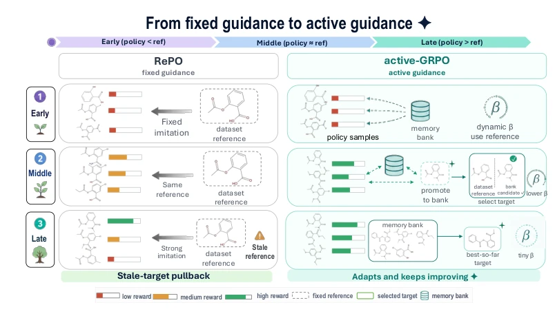
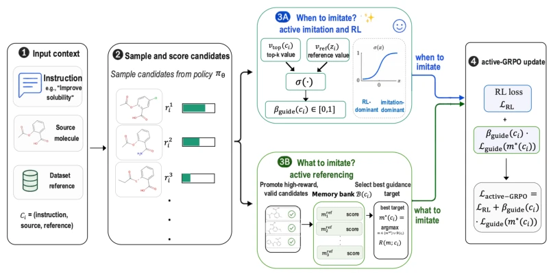
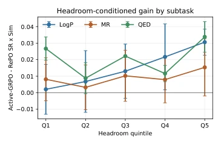
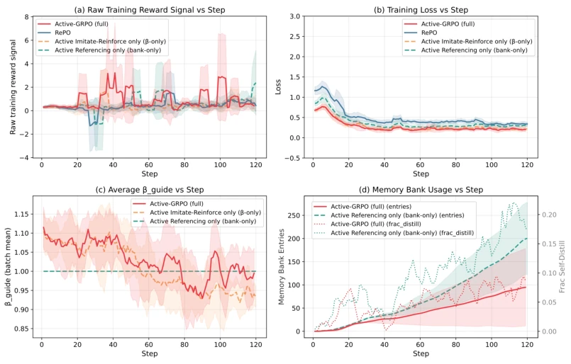
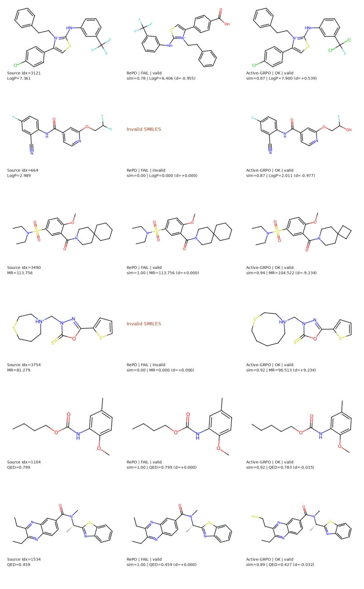
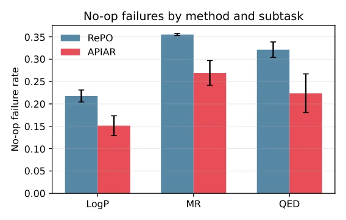

This paper serves as a "wake-up call" for the molecular optimization community. RePO is like that stubborn old professor; no matter how well students perform, they are forced to imitate standard answers, resulting in a locked ceiling. Active-GRPO is like a "rebellious" student; it changes textbooks when it discovers better answers on its own and knows how to imitate conditionally. Although it only shows off in the molecular field, this "dynamic reference" approach is quite appealing, though it remains unknown whether it can be transferred to robotics—after all, molecules have no legs, while robots do. However, for scientific reasoning tasks, this adaptive mechanism is indeed superior to rigid supervision; at least it is no longer swayed by low-quality reference data, effectively adding a "self-correction" brake pad to LLM reasoning. The drawback is that experiments focus mainly on the molecular field, generalization requires verification, and it depends on the initial quality of reference molecules; if the initial reference is too poor, it may affect convergence.
Scientific discovery requires multi-step reasoning, but existing methods either rely on SFT for rote memorization [10] or RLVR with sparse rewards [19, 28]. RePO [32] attempts to utilize reference molecules for dense signals, yet commits the error of a "static reference ceiling". Once the policy surpasses the reference, imitation instead becomes a burden. This is akin to making a race car driver always follow a slow car, never winning the championship. Especially in molecular optimization, reference molecule quality varies; fixed references limit the policy's space to explore better solutions, leading to performance bottlenecks. When the reference itself is weak, it can even pull the policy in the wrong direction, forming negative feedback. Existing methods lack the ability to dynamically adjust references, cannot adapt to the growth of policy capabilities, limiting the optimization upper bound under complex constraints.

Figure 1: Conceptual motivation for Active-GRPO. RePO continues to imitate a fixed reference, which can become stale as the policy improves. Active-GRPO instead adapts both imitation strength and the guidance target, enabling a transition from reference imitation to active self-improvement.
The core is Active-GRPO. The pipeline is Input Instruction -> Generate Reasoning Trajectory + Molecule. Innovation 1: Active Imitate-Reinforce, based on the reward difference between the policy's best sample and the reference, dynamically adjust imitation weight $\beta_{guide}$ using sigmoid; when policy is strong, imitate less; when weak, imitate more, ensuring smooth transition. Innovation 2: Active Referencing, maintain a Memory Bank, replace original references with better molecules generated by the policy, achieving "self-evolution". The Loss function combines RL and dynamically weighted imitation loss. The two mechanisms are coupled, ensuring the reference is always effective. The Promotion mechanism also adds a threshold to prevent noise. Specifically, when policy sample reward exceeds reference, $\beta_{guide}$ decreases, RL signal strengthens; meanwhile Memory Bank updates best candidates, guiding subsequent training, forming a positive feedback loop.

Figure 2: Overview of Active-GRPO. The method augments reference-guided policy optimization with two active decisions: when to imitate, through a dynamic guidance weight, and what to imitate, through active reference selection over promoted policy-discovered candidates.
Tested LogP, MR, QED on TOMG-Bench MOLOPT. Baselines include GRPO, RePO, Iterative SFT. The metric focuses on SR×Sim. Results show Active-GRPO wins comprehensively, average SR×Sim raised from 0.1665 to 0.1773. Ablation experiments prove the two mechanisms are complementary, neither can be omitted. Training dynamics show the reference is indeed updating, not a fake move. Improvement is more obvious on tasks with large optimization space, verifying the necessity of dynamic reference. It was also found that RePO's high similarity is sometimes caused by "not moving", while Active-GRPO is more honest. Statistical significance verified via paired bootstrap, p < 0.001. Additionally, it has advantages on MOLEDIT and hard cases, proving generalization is acceptable.

Figure 3: Optimization-headroom conditional analysis. Left: Active-GRPO–RePO gain in SR×Sim across headroom quintiles for all three MOLOPT subtasks. Right: the LogP numerical breakdown, where the gain increases monotonically from the lowest-headroom bin to the highest-headroom bin. Full per-subtask numerical tables are reported in Appendix C.3.

Figure 4: Active-GRPO training dynamics over three seeds, with mean ± standard deviation. Panel (a) shows the raw training reward signal logged by the trainer, rather than evaluation SR×Sim; panels (b)–(d) show training loss, average guidance weight, and memory-bank/self-distillation activity.

Figure 5: Qualitative case studies across LogP, MR, and QED. Active-GRPO makes targeted structural edits that satisfy the requested property objective while preserving much of the input structure. RePO often either copies the source molecule, yielding high similarity but no property improvement, or produces an invalid or wrong-direction edit.

Figure 6: No-op failure rate by method and subtask. A no-op failure is defined as an output with high similarity to the source molecule, Sim( bm, msrc) ≥0.98, that nevertheless fails the requested property objective. Lower is better.